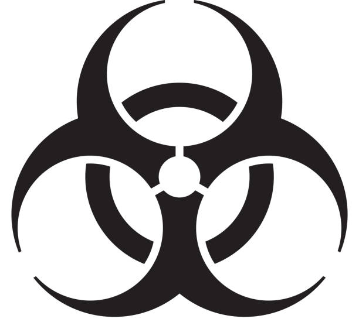
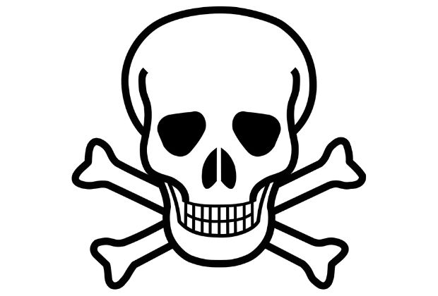
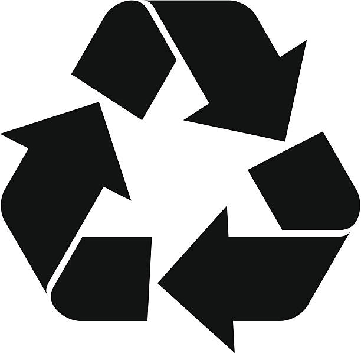

O grupo B refere-se a materiais que contém radionuclídeos em quantidades superiores aos limites especificados nas normas do CNEN e para os quais a reutilização é imprópria ou não prevista.
O grupo E se refere a resíduos que não apresenta risco biológico, químico ou radiológico à saúde ou ao meio ambiente, podendo ser equiparados aos resíduos domiciliares.
O grupo D se refere a materiais perfuro cortantes.
O grupo A se refere a materiais com a presença de agentes biológicos, que, por suas características, podem apresentar riscos de infecção.
O grupo C refere se a resíduos que contenham substâncias químicas que podem apresentar risco á saúde pública ou ao meio ambiente, dependendo de suas características de inflamabilidade e corrosividade.
1.  2.  3.
4.  5. 6.
Identifique o símbolo acima com o grupo de resíduos:
1. A 2.C 3.E 4. D 5. D Reciclável 6.A
1. A 2.B 3.C 4. D 5. D Reciclável 6.E
1. B 2.E 3.C 4. D 5. D Reciclável 6.A